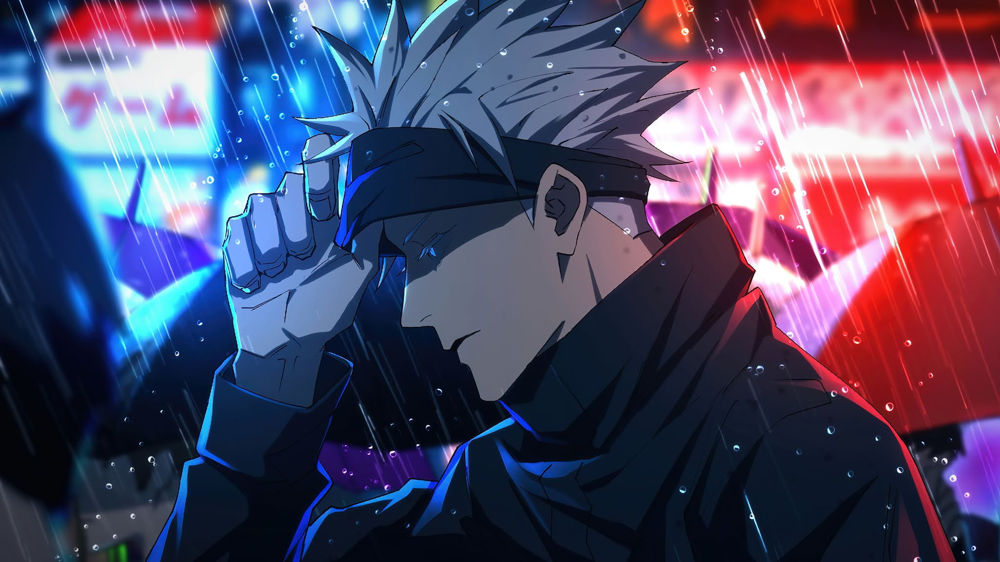

JUJUTSU KAISEN
SHONEN
High schooler Yuuji Itadori's life takes a strange turn when he encounters a cursed item, thrusting him into a world of Curses after swallowing it. With newfound powers and threats looming, he joins Tokyo Metropolitan Jujutsu Technical High School as a Jujutsu sorcerer, embarking on an irreversible path.